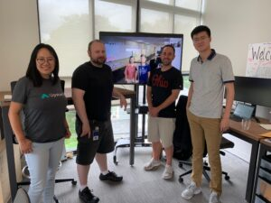

By Catherine Reynolds
Each week I have an opportunity to speak with data scientists evaluating career options. I’m often asked, “What makes Upstart a great place to work for data scientists?”
As a talent partner for the data science team, I’ve had an opportunity to get to know our data scientists both inside and outside of the office. As a followup to my Superwomen post, I wanted to summarize the unique attributes of data science at Upstart.
Mission
Data scientists at Upstart build the statistical and machine learning models that power our platform. The data science team directly impacts our mission of enabling effortless credit based on true risk. By collaborating with our engineering team, data scientists use non-traditional variables at scale to continuously improve our underwriting, fraud, pricing, and marketing models.
“At Upstart, data science has a key role in business success. I could not be happier coming to work every day seeing the value we are adding to the company and the impact of our work on the company’s mission of improving people’s financial lives.”
–Anh Pham, data scientist

Celebrating a successful model launch!
Diverse, Close-Knit Team
Data scientists at Upstart represent graduate programs from 16 universities with areas of study in statistics, mathematics, economics, physics, computer science and finance, among other quantitative disciplines. The team is presently comprised of members representing six countries including the United States, Canada, China, India, Germany, and Vietnam.
“Having data scientists from very different backgrounds brings a diversity of perspectives, experiences, and thoughts to our team. It helps us come up with great ideas and creative solutions. In addition, I personally learn new things from my colleagues every day.” –Anh Pham, data scientist
Outside of the office, the team also enjoys activities together such as hikes, cooking, sports leagues, and game nights.
Hiking in Woodside, CA
Solving Challenging Problems
From day one, team members are given the support to solve challenging problems. Whether a full stack data scientist or specialist, team members have an opportunity to work on research and analysis, production systems, or both, with the flexibility to switch among different domains and projects.
Upstart’s research environment gives data scientists an opportunity to apply a variety of statistical methods such as classification, regression, survival analysis, time series, model extrapolation and interpretability, causal inference and natural experiments. Data scientists also have the freedom and encouragement to pursue alternative approaches to solving problems. At the end of the day, the best idea wins, no matter where it comes from.
“At Upstart we’re tackling a fairly broad set of business problems. We’re also working with the most cutting-edge machine learning methodology without the limitations on creativity like other organizations. There are lots of areas to dive into and gain knowledge. It would take years to get this experience in traditional companies. At Upstart you get to know the entire business.”
–Jessie Zaetz, data scientist
One Team, Two Locations
Upstart has two amazing office locations in both the San Francisco Bay Area and Columbus, Ohio. Enterprising data scientists who want to experience the startup culture of Silicon Valley may enjoy working from our new office in San Mateo. Upstart’s offices are located between San Francisco and the South Bay with easy Caltrain access. The region offers a vibrant tech and cultural scene.
As the second largest city in the Midwest after Chicago, Columbus topped SmartAsset’s list as the best US city for tech workers for the past three years. Upstart’s offices are located in the thriving Short North Arts District, a walkable neighborhood with many shops, restaurants, and galleries nearby.
“Whether building your career in an established tech scene or the next tech scene, having two offices provides a lot of optionality,” said Grant Schneider, long-time Upstarter and head of Upstart Columbus. “Data scientists can join a great company without committing themselves to a single location, especially if they’ve never lived in either. It also provides an excuse to travel to two great locations.”
Professional Development and Career Growth
In addition to learning from each other every day, members of our data science team have attended conferences such as JSM, PyCon, NeurIPS, Women in Data Science, Women in Analytics and local meetups in the Bay Area and Columbus. Upstarters also enjoy personal and team budgets for training and professional development.
We’ve doubled the size of our data science team this year! As a growing company, there are emerging opportunities to lead big initiatives and pursue leadership paths within Upstart.

Virtual meeting between our offices
Culture and Perks
We measure excellence by the quality of work rather than time spent in the office. Upstarters enjoy a casual work environment, flexible schedules, free lunch and snacks every day, generous PTO, and other perks.
We’d love to meet you!
Upstart is a sponsor of JSM in Denver July 28 – August 1st! We hope you’ll stop by Booth 136 to say hello and learn more about opportunities with our data science team. For more information about life at Upstart, view our Careers page to explore possibilities.